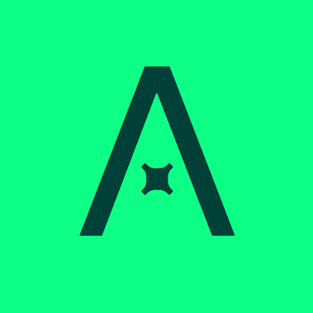
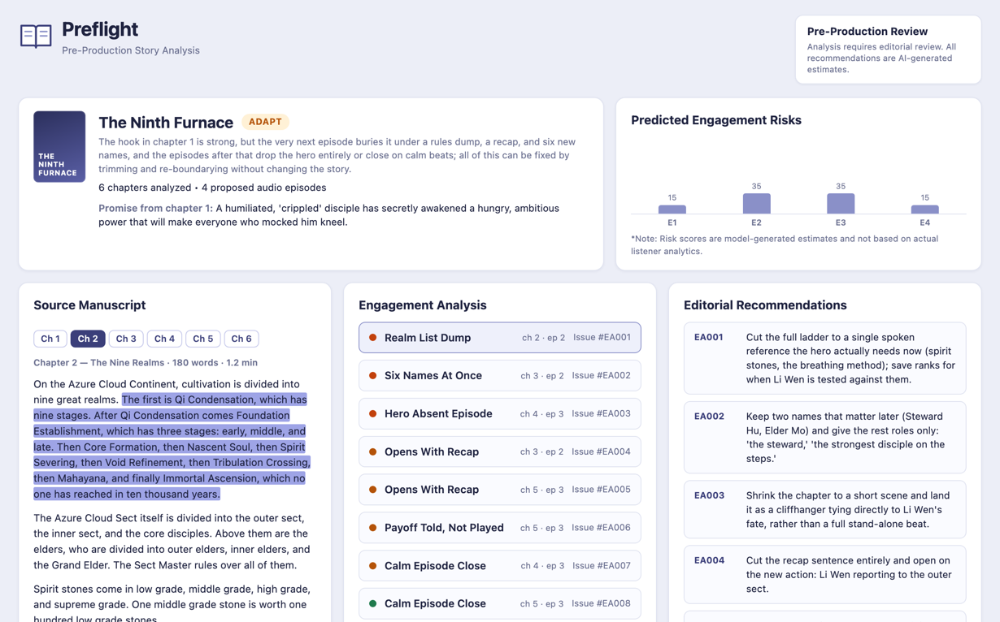
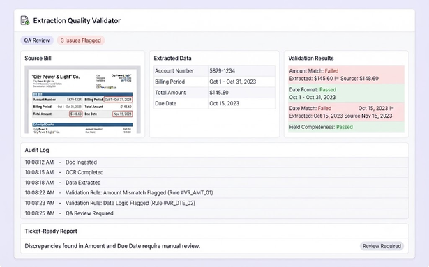

Anna University
Kumaraguru College of Technology
BE, Electronics and Communication Engineering
Open to growth & product roles
Building Products. Understanding Market. Driving Growth.
I build with logic.
I think beyond the code.
I'm a tech-savvy professional with a passion for solving problems, understanding user behavior, and turning ideas into measurable outcomes.
With a background in software engineering and hands-on experience with AI-powered tools, I bring a technical, analytical, and solution-oriented approach to product and business challenges.
I'm particularly interested in the intersection of technology, user engagement, experimentation, and business growth.
Kumaraguru College of Technology
BE, Electronics and Communication Engineering
Contributed to ideation and strategic planning for club development and initiatives.
Gained hands-on exposure to software development, technical collaboration, and problem-solving.

Developed and maintained technical solutions, resolved complex engineering challenges, and collaborated across teams to improve system reliability, streamline workflows, and deliver efficient solutions.
Supported growth initiatives by analyzing performance metrics, identifying optimization opportunities, and contributing to strategies aimed at improving user engagement, conversion rates, and overall business performance.
Technical Skills
Non-Tech Skills
Audience Brain
Genres I Play With
Fantasy · Romance · Romantasy · Rom-Com · Dark Romance · Thriller · Mystery · Drama · Action · Progression Fantasy · LitRPG · Isekai · Psychological Drama
Practical applications of AI, automation, and growth-focused problem-solving.

PreFlight reads a web novel before it is recorded as an audio series, shows where listeners are likely to stop listening, and how to fix it.
A story review tool. It reads the chapters, points to the exact lines where listeners may lose interest, splits the chapters into episodes that each end on a cliffhanger, and rewrites weak openings and endings. Every novel gets one of three results: GO (ready to record), ADAPT (fix the episode plan first) or HOLD (the story itself needs work).
I split the work in two. Python does the counting: how long each chapter is, how many new names it brings in, and where the episodes break. AI does the reading and the rewriting. Every problem it points out must quote a real line from the novel, and the tool checks that the line actually exists, so nothing is made up. All of this happens before production, not after launch.
Extraction Quality Validator checks utility-bill extraction. Give it a ticket number and it fetches the bill and the extraction log, compares them field by field, and writes a ticket-ready report.
A Cursor workflow and a FastAPI app. A script pulls the bill and the log for the ticket, pairs each bill with its extraction, checks every amount, date and format against the bill, and flags what does not match. Claude is the second pass, for the judgment calls the rules cannot make.
The exact checks run as code, so the model is only called for judgment. That cut about 20–25K tokens of AI work on every audit, and the same bill always gets the same answer.

Curious enough to question the obvious. Practical enough to ship.
Before suggesting a solution, I want to understand who experiences the problem, how often it occurs, and why it matters.
I value evidence, but I also pay attention to its limitations. A metric is useful only when its definition and context are clear.
Rather than committing to a large initiative based on an untested assumption, I'd rather identify a focused experiment that can teach us something useful.
Growth problems rarely belong to a single team. I value clear communication and shared ownership between technical, creative and business stakeholders.
I look for ways to accelerate research, analysis, prototyping, and repetitive tasks while preserving human judgment and accountability.
An increase in clicks means little if users do not find value. I want to understand the relationship between short-term performance and long-term customer behavior.
Why not? After all, the product experience is the growth engine.
Pocket FM operates in a category where user engagement is closely connected to the experience itself. Discovery, storytelling, episode continuation, personalization, and monetization all contribute to the relationship between the listener and the platform.
That makes it an interesting environment for someone who wants to combine technical problem-solving with growth. I'm particularly interested in three areas:
Understanding what makes users return and developing experiments that help build sustained engagement.
Exploring how discovery, listener preferences, and content performance can help users find stories they want to continue.
Using AI and automation to accelerate research, experimentation, personalization, and execution while maintaining quality.
I would bring an engineer's approach to problem-solving, a willingness to work hands-on, and a strong interest in learning how growth decisions translate into measurable business outcomes.
Have a problem worth solving?
I'm always interested in conversations about product growth, customer retention, experimentation, AI-enabled workflows, and the intersection of technology and business.
If you're building products, exploring new growth opportunities, or looking for someone who enjoys breaking complex problems into practical steps, I'd love to connect.